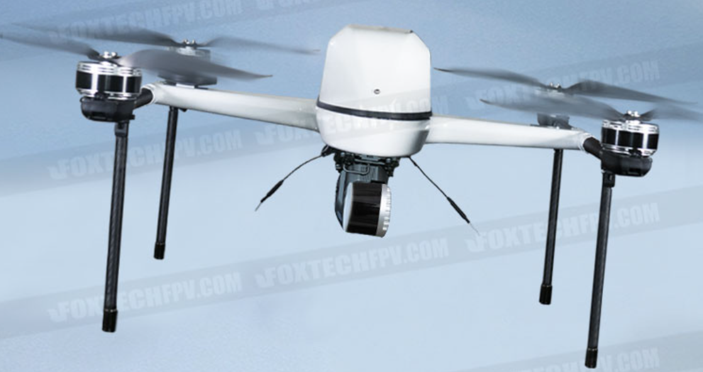

DRONE SURVEY
Drones are powerful tools to help in the mapping and surveying industry. They can effectively perform work for 3D mapping, land surveys, photogrammetry, and topographic surveying by flying above the ground. Whether you are looking to add another tool to your services or want to learn more about the world of drones, here is everything that you need to know about drone surveying.
